Ders 5
Artık iki boyutlu sistemlere geçme zamanı geldi. Bu konuyu uzun bir süre işleyeceğiz, ve en basit iki boyutlu sistemle ise başlayalım; çünkü tahmin edebileceğiniz üzere işleyebileceğimiz pek çok farklı iki boyutlu yüzey var. Düzlem (plane) bunlardan sadece biri. İlk işleyeceğimiz konu bu olacak, ama silindir, küre yüzeyleri de var; bu tür gayrı-lineer sistemler doğada pek çok yerde görülebiliyor.
Başlangıcı faz düzlem analiziyle (phase plane analysis) yapalım. Sistem şuna benzeyecek,
$$ \dot{x} = f(x,y) $$
$$ \dot{y} = g(x,y) $$
$f,g$ tipik olarak gayrı lineer fonksiyonlar olur. Notasyon $ (x,y) \in \mathbb{R}^2$. $(\dot{x},\dot{y})$ çifti bir hız vektörü olarak düşünülür. Hız derken mekanikteki hızdan bahsetmiyorum, faz uzayındaki yapay bir hız bu. Eğer $x,y$ bir yersel kordinatı temsil ediyor olsaydı, $(\dot{x},\dot{y})$ o zaman mekanik hızı temsil ediyor olurdu. Ama $x,y$ bir nüfus, ya da kimyasal maddlerin konsantrasyonu gibi pek çok farklı ölçüm olabilir.
Grafiksel olarak faz düzlemi,
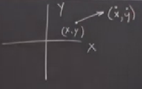
$x,y$ noktasından çıkan bir vektör o noktadaki hızı vektörsel olarak temsil ediyor. Eğer o $x,y$'de olsaydık, bir sonraki gittiğimiz yer vektörün diğer ucu olacaktır. Tabii o noktada da bir başka vektör olurdu, sonra o vektörü takip ederdik, vs, bu böyle devam ederdi. Sürekli vektörleri takip ederek bir gidiş yolu üzerinde (trajectory) hareket ediyor olurduk.
Bazen sistemi şu formda göstermek daha faydalı oluyor,
$$ \dot{\underline{x}} = \left[\begin{array}{r} x \\ y\end{array}\right] $$
$$ \dot{\underline{x}} = \underline{f}(\underline{x}) $$
$f,g$'nin pürüzsüzlüğü hakkında birkaç şey söyleyelim. Daha önce vurguladığım gibi bu derste aşırı seçici olmadığımız bir konu abartılı teorik gereklilikler; mesela $f,g$'nin yeterince pürüzsüz olduğunu farz ediyoruz, yani ODE'nin çözümleri var ve bu çözümler özgün demiş oluyoruz. Bizim için yeterli bu şartı şöyle ifade edebiliriz: Eğer $\underline{f}$ ardı ardına türevi alınabilir bir fonksiyon ise (yani $\underline{f}$ ve onun türevleri sürekli ise), o zaman ardı ardına türevi alınabilir bir vektör alanımız var demektir, ve bu da herhangi bir başlangı noktası için $\underline{x}(t)$ çözümleri mevcut ve özgün anlamına gelir.
Gidiş yolu kelimesini kullandım, çözüm spesifik bir gidiş yoludur,
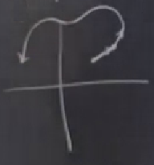
Üstte görüldüğü gibi. Bir başlangıç noktasından bir vektörü takip ederim, oradan bir diğerini, ve faz düzleminde üstteki gibi bir gidiş yolu $x(t)$ ortaya çıkar. Bu bir çözümdür.
Ama tekrar vurgulayayım, bu derste üstteki gibi bir çözümün yapısını anlamaya uğraşıyoruz, bunu sistem denklemklerini direk çözmeden yapmaya uğraşıyoruz. Bazı argümanlar geliştirerek çözümün şeklini görmek istiyoruz.
Mevcudiyet ve özgünlük şartının doğal bir sonucu var, bu ilginç bir durum ve şartın kendisinden bariz olarak görülemeyebilir. Bu önemli bir kavram ve takip eden anlatımlarda merkezi bir yeri var. Bu sonuç şudur; eğer çözümler özgün ise, gidiş yolları birbiriyle kesişemezler. Yani faz portrelerini çizerken şöyle bir şekil görmemiz mümkün değildir,
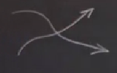
Bu mümkünsüzlüğün sebebini anlamak için herhangi bir hayali kesişme noktasında isek bir sonraki gidişatın ne olacağını düşünmek yeterli. Öyle bir durumda kesişme noktasından sonra iki tane farklı gelecek (gidiş yönü) olurdu, ve bu iki seçenek varlığı çözümlerin özgünlüğü prensibine aykırıdır.
Diğer yandan gidiş yolları sabit noktalarda birbirine yaklaşabilir, alttaki gibi bir şekil mümkündür,
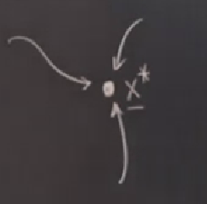
Son iki ifade arasında çelişki yok. Üstteki bir sabit nokta, ve o noktada isek, orada kalırız (sabit nokta nihayetinde), ve ona doğru işaret eden gidiş yolları sabit noktaya dokunmuyor aslında, sadece ona yaklaşıyorlar. Eh, tamam, sonsuz zamanda dokunuyorlar, ama herhangi bir sonlu (finite) zaman içinde dokunma yok.
Unutmadan, iki boyutlu durumda sabit noktaların oluşmasının şartı bir $x,y$ noktası için hem $\dot{x}=0$, hem de $\dot{y}=0$ olmasıdır. Ya da vektör notasyonu ile $\underline{f}(\underline{x}^\ast)=\underline{0}$. Eşitliğin sağındakine dikkat, bu bir "sıfır vektörü", içinde sadece sıfır değerleri var.
Gidiş yollarının kesişmeme şartının topolojik sonuçlarına bir bakalım. Diyelim ki elimizde kapalı bir yörünge (closed orbit) var, $\mathbb{R}^2$ için olsun,
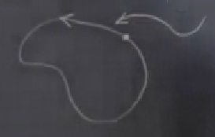
Bir noktadan başlanıyor, ama gidiş yolu gide gide tekrar kendisine dönüyor. Bu tür bir yol diferansiyel denklemlerin dönemsel bir çözümü olduğunu gösterir. Şimdi dışarıdan döngüye yaklaşan bir gidiş yolu düşünelim (üstteki resimde yine), yol döngünün içine "giremez"; o zaman özgünlük prensibi ihlal edilmiş olur. Hadi birleşim olduğunu varsayalım, ve birleşim sonrası bir noktadan zamanı geri saralım; birleşme anında zaman hangi gidiş yoluna sapacak? Bu bir çelişki ortaya çıkartır. Yani bir döngünün varlığı iki boyutta diğer gidiş yolları için ciddi bazı kısıtlamalara sebep oluyor.
$\mathbb{R}^3$'te gidiş yolları birleşebilir, çünkü üç boyutta bir döngü uzayda bir ayrım yaratamaz, ve bu durum bazı şartlarda kaos ortaya çıkartır. İki boyutta kaos olması mümkün değildir. Hatırlarsak, tek boyutta yapılabilecekler çok basitti, sabit noktaya, ya da sonsuzluğa doğru akıyor her şey. İki boyutta sabit noktaya, ya da dönemsel bir yörüngeye gidilebilir.. farklı biraz daha egzotik şeyler de mümkün, fakat kaos mümkün değil. Üç boyutta kaos olabilir, zaten üç boyut kaosun ilk ortaya çıkabileceği yer.
Önümüzdeki bir kaç dersteki amacımız verili bir $\dot{\underline{x}}=\underline{f}(\underline{x})$ sistemi için faz portresini (grafiğini) çizmek, bunu niteliksel olarak farklı olan tüm gidiş yollarının göstererek yapmak, sabit noktaları, stabilitesi, ve muhtemel kapalı yörüngeler hakkında yine niteliksel bilgi toplamak. Bunu iki boyutta sabit nokta etrafında lineerizasyon kullanarak yapacağız. Tek boyutta sistemi olduğu gibi analiz etmek kolaydı fakat iki boyutta bu biraz daha zor.
Sistemlerimizi
$$ \dot{\underline{x}} = A \underline{x} $$
olarak yazacağız. Bu konunun standart diline atıf yapmak gerekirse, "sabit katsayılı, homojen lineer sistemler"e bakacağız. $A$ bir sabit katsayılar matrisi, ve sayılar reel. Bu tür sistemlerde orijin her zaman bir sabit noktadır, $\underline{x}^\ast = \underline{0}$, kontrolü kolay - sıfır vektörü $A$ ile çarparız, ve sonuç sıfır. Tabii tüm faz portresini ve diğer sabit noktaları da bulmak istiyoruz.
Faz portresi $A$'nin özdeğerleri ve özvektörleri üzerinden tanımlıdır, ki özdeğer / vektörlerin lineer cebir derslerinde öğretilmesinin önemli bir sebebi de budur, çünkü onlar sayesinde lineer diferansiyel denklemleri çözebilirsiniz.
Bu tekniği işlerken görmek için ilk önce sistemin özel bir çözümünü ararız. Fizikçiler böyle yaklaşırlar bu tür problemlere, genel çözümü aramak yerine, bakılan çözümler düzlem üzerindeki bir çizgi üzerinde olan çözümlere kısıtlanır. $\underline{x}(t) = \underline{v}$ türünde çözümleri arayalım, $\underline{v}$ bir sabit vektör, ve bir yöne işaret ediyor.
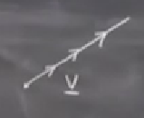
Bu arada gösterilen gidiş yolu sabit hızda olmayabilir, bazen hızlanıp, bazen yavaşlayabilir, ama direk çizgide gider.
Çözüm sadece bir sabit olamaz muhakkak, bir zaman bağlantısı da ekleyelim,
$$ \underline{x}(t) = \underline{v} e ^{\lambda t} $$
Diferansiyel denklemleri bilenler üstel fonksiyonun burada doğru bir seçim olduğunu bilirler.
Türev ve zincir kuralını uygularsak,
$$ \dot{\underline{x}} = \underline{v} \lambda e ^{\lambda t} $$
Daha önceki eşitlikten hareketle,
$$ = A \underline{x} = A \big( \underline{v} e ^{\lambda t} \big) $$
Lineerlik üzerinden $e ^{\lambda t}$'yi dışarı çekebiliriz,
$$ = e ^{\lambda t} A \underline{v} $$
Üstteki formülde $e^{\lambda t}$ var, üç üstteki formülde de var, o zaman üstteki türdeki çözümler mevcut olacaktır eğer $A \underline{v}=\lambda\underline{v}$ şartına uyan bir $\underline{v}$ ve $\lambda$ bulabilirsek. Ve farketmiş olabilirsiniz, bu şart (formül) özdeğer / vektörlerin tanımlayıcı formülüdür, $\underline{v}$ özvektör, $\lambda$ özdeğer olmak üzere.
$\underline{v},\lambda$ mevcut ise düz çizgi çözümlerimizi bulabiliriz, peki mevcut olduklarını nasıl tespit ederiz? Cevap lineer cebir üzerinden onları hesaplamaya uğraşmakla verilebilir. $\lambda$ için $\det (A - \lambda I) = 0$ çözülür, bizim ufak matris için
$$ 0 = \left[\begin{array}{rr} a-\lambda & b \\ c & d-\lambda \end{array}\right] $$
$$ = \lambda^2 - \tau \lambda + \Delta \qquad (1) $$
Üstte daha ileride bolca kullanacağım notasyonu tanıştırmış oldum bir yandan. $\tau$ matrisin izi'dir (trace), yani matrisin köşegenindeki öğelerin toplamıdır. $\Delta$ ise matris determinantı olacaktır,
$$ \tau = \mathrm{tr} A = a + d$$
$$ \Delta = \det A = ad - bc $$
Karesel formülü kullanarak (1)'i çözebiliriz,
$$ \lambda_{1,2} = \frac{\tau \pm \sqrt{\tau^2-4\Delta}}{2} $$
$$ \tau = \lambda_1 + \lambda_2 $$
$$ \Delta = \lambda_1 \lambda_2 $$
Şimdi $\lambda$'lara bağlı olarak faz portelerinin nasıl görüneceğine bakalım. Aslında özdeğer / vektörleri hesaplamadan direk iz ve determinanta bakmak bize çok şey söyler.
$\dot{\underline{x}}= A \underline{x}$, $x \in \mathbb{R}^2$ İçin Sabit Noktaların Sınıflandırılması
Durum 1) Eğer Noktaları (Saddle Points)
Bu noktaları anında bulmak mümkün çünkü negatif determinantı olan onlar. Yani matrisimiz için determinantı hesaplarsak ve $\Delta < 0$ çıkarsa, iş bitti demektir. Elde bir eğer noktası var. Bu da mesela $\lambda_1 > 0$, $\lambda_2<0$ anlamına gelir, ve her iki değer birbirinden farklıdır (distinct), işaretleri birbirinin zıttı.
Lineer cebirde güzel bir teori var, bu teori der ki eğer iki farklı özdeğer elde edersek, onlara tekabül eden özvektörler birbirinden bağımsızdır. Bu illa ki birbirlerine dikgen anlamına gelmez, sadece aynı çizgi üzerinde değiller demektir.
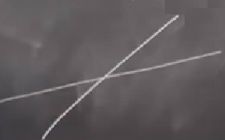
Çizersek mesela vektörler üstteki gibi olabilirdi; bu çizgiler iki özvektörün kapsamıdır (span), yani her vektörün mümkün tüm tek sayılar ile çarpılmış hali - aynı çizgide gösterince üstteki iki çizgiyi elde edebilirdik.
Şimdi genel çözümü yazarız, bu çözüm iki çözümün üst üste konmuş hali olacaktır.
$$ \underline{x}(t) = c_1 e^{\lambda_1 t} \underline{v}_1 + c_2 e^{\lambda_2 t} \underline{v}_2 $$
$c_1,c_2$ herhangi birer sabittir. Bu ifade tanıdık gelmiştir herhalde, genel çözüm "özçözümlerin" lineer bir kombinasyonudur.
Bunlar üstteki resmimiz için ne anlama geliyor? Mesela bir çizgi üzerindeysek ve orada $\lambda_1 > 0$ ise, orijinden uzaklaşacak şekilde hareket ediyoruz,
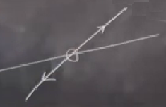
Orijindeki sabit noktanın gayrı stabil olduğunu görüyoruz. Fakat diğer "özyön" için $\lambda < 0$, bu üstel bir çürüme var demektir,
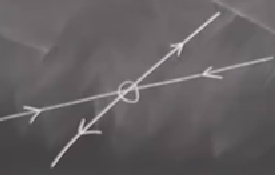
Olanlar eğer noktası tanımına tam uygun, bir sabit noktaya hem giden hem de ondan kaçan gidiş yolları var. Diğer düz olmayan gidiş yolları da üsttekine uyumlu olarak şu şekilde olurdu,
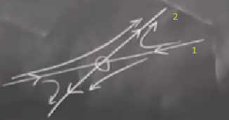
Kıvrımlı gidiş yollarını doldururken negatif ve pozitif sonsuzluğa giderken görülecek davranışı düşünürüz, mesela üst sağ kısmında yukarı giden eğri üst sağ yukarı doğru giden düz çizgiye yaklaşır, sonuşur (asymptotic) davranışı budur.
Çizgilerden 1.'sine stabil özyön, 2.'sine gayrı stabil özyön ismi de verilir.
Durum 2) Çeken (ve İten) Sabit Noktalar
Altta sadece çeken noktaları göstereceğim - iten durum topolojik olarak aynı, tek fark okların terse çevirilmiş olması. Çeken noktaları karakterize eden bir özellik $\Delta > 0$, $\tau < 0$. İtenler için ise $\Delta > 0$, $\tau > 0$.
Bazı alt durumlar var,
Durum 2a) Düğümler (Nodes)
Düğümleri kontrol eden karekök mevcudiyetidir, eğer bir karekök var ise, bir düğüm var demektir, yani $\tau^2 - 4\Delta > 0$ ise. Bu durumda her iki $\lambda$ reel olurdu, işaretleri de aynı olurdu.
Başka bir durumu görelim. Diyelim ki $\lambda_1 < \lambda_2 < 0$, ve $\underline{v}_1$, $\underline{v}_2$ hala bağımsız.
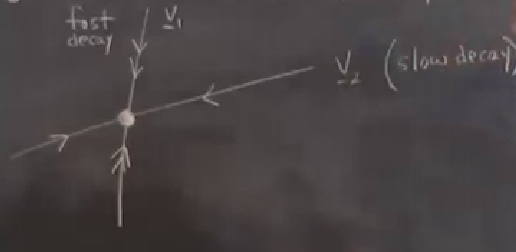
Yine iki özyön var ama bu sefer gidiş stabil noktaya doğru. Dikkat gösterilen çizgiler $\underline{v}_1$, $\underline{v}_2$ vektörlerinin kendisi değil, onların her türlü tek sayısal çarpımdan gelen katlarından oluşan bir uzay, yani "özuzay".
$\lambda_1$ daha negatif demiştik, o zaman $\underline{v}_1$'in çürümesi daha hızlı (fast decay) olacaktır, $\underline{v}_2$ daha yavaş (slow decay) olacaktır. Diger eğrileri de eklersek,
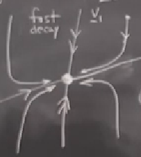
Üstteki resim stabil bir noktaya yakın olduğumuzdaki hali gösteriyor.
Bir noktayı daha vurgulamak isterim, belki resimden bariz anlaşılmamıştır; $t\to\infty$ tipik gidiş yolları yavaş yola teğet olacak şekilde $x^\ast$'ya yaklaşır. Eğer zamanı geri sararsam, $t\to-\infty$ iken, bu ters gidiş hızlı yöne paralel olur.
Durum 2b) Sarmallar (Spirals)
Bu durumda $\Delta > 0$, ve nagatif iz $\tau < 0$, onları çeken (attracting) hale getiren bu. $\tau^2 - 4\Delta < 0$ olur, o zaman kökler, $\lambda$'lar, kompleks, ve özdeğerler reel olmayacak. Faz portresi için kompleks özvektörlerle ilgilenmiyoruz, portrede sadece reel özvektörler görünür. Özdeğerler birbirinin kompleks eşleniği olarak tabii ki belli ve birbirinden ayrıdır (distinct), $\lambda = \mu \pm i\omega$ formunda gösterelim onları.
$\mu,\omega$'nin güzel fiziksel yorumlaması yapılabiliyor. $\mu < 0$ durumu çürüme oranını kontrol ediyor, $\omega$ ise sarmalın dönme oranını temsil ediyor. Eğer $x(t)$ çözümlerini yazarsak, lıneer cebir bize $\underline{x}$'in her bileşeni $e^{\mu t} \cos \omega t$ ve $e^{\mu t} \sin \omega t$'nin bir lineer kombinasyonu. Bu şekildeki formüller eğer önceden sönümlü harmonik titreşirler (damped harmonic oscillator) konusunu öğrendiyseniz tanıdık gelecektir. Üstel terimle çürüme var, ve $\sin$ ya da $\cos$ üzerinden salınım terimi var. O zaman sarmallar sonumlu titreşirler geometrik karşılığıdır.
$x,y$ düzleminde tipik bir gidiş yolu suna benzer,
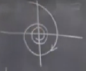
Görüntüde bir sarmal var, isim ondan seçilmiş zaten. Alttan bir gidiş yolu daha katılabilir,
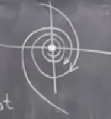
İnsanların çoğu zaman aklına "sarmalın hangi yöne döndüğünü nasıl bileceğim?" sorusu geliyor. Üstte çizdiğim şekil saat yönü bir dönüşü gösteriyor, bunu nereden biliyordum? Bu bilgi $\tau,\Delta$ ya da $\lambda$'dan gelmiyor, vektör alanına bakmak lazım. Tavsiyem tek bir vektörü hesaplamak,
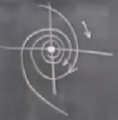
Üst sağda görüldüğü gibi, ve o vektörün yönüne bakmak. O yön hangisi ise dönüşün o yönde olduğu anlaşılabilir.
Soru
Stabil, gayrı-stabil düğümlerin olduğu gibi stabil ya da gayrı-stabil sarmallar da olabilir mi?
Cevap
Evet, okların yönünü değiştirerek bunu elde ederiz, mesela biraz önceki örnekte
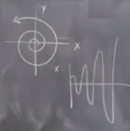
Bu gayrı-stabil bir sarmal. Eğer $x,y$ eksenlerine tekabül eden $x,t$ zaman serisini çıkartacak olsam, alt sağdaki grafik olurdu - büyüyen bir salınım.
Soru
Sarmalı yuvarlak bir şekilde çizdiniz, şekil gerçekten böyle mi?
Cevap
Güzel soru, aslında sarmalı daha eliptik bir şekilde çizmek lazım, mesela üstten daha basık bir yuvarlak.
Devam edelim; sarmalların özel bir hali $\mu = 0$ olduğu zamandır. Bu durumda neler olduğuna bakalım,
Durum 3) Merkez (Center)
Bu durumda $\Delta > 0$, $\tau = 0$ ve $\lambda = \pm i\omega$, yani pür hayali. Merkez halinde her gidiş yolu kapalı, tipik bir resim şuna benzer,
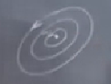
Gidiş yollarının hepsi aynı yöne işaret ediyor.
Merkez'in en iyi bilinen örneklerinden biri, sönümsüz basit harmonik titreşirlerin faz portresini çizince bu şekil çıkar, $\ddot{x} + x = 0$ sistemini bir faz düzlem resmine çevirince mesela. Bu sistemin resminde tam çemberler olur. Çizelim,
$$ y = \dot{x} $$
olsun,
$$ \dot{x} = y $$
O zaman
$$ \dot{y} = -x $$
İlk önce eksenlerden çıkan okları çizeriz, onları taslaklamak kolay, ardından birkaç tane diğer yerlerden ekleriz,
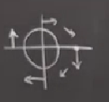
Soru
Gidiş yolları bir sabit noktaya yaklaşır mı?
Cevap
Hayır, her gidiş yolu kapalı, yani gidip gidip kendilerine dönüyorlar. Orijinde bir sabit nokta var, fakat diğer tüm gidiş yolları onun etrafında bir kapalı yörüngede.
Bu örnek mükemmel periyotsal hareketi gösterdi, hatta her başlangıç şartı için periyot olan bir örnek görmüş olduk. Gayrı-lineer sistemlerde bu çoğunlukla ortaya çıkmaz, eğer muhafaza edilen enerji gibi ek bir özellik ortada yoksa yani. Fakat bu tür lineer sistemlerde üstteki görüntü rahat bir şekilde ortaya çıkabiliyor.
Durum 4)
Bu çok acaip bir durum. Eğer $\Delta = 0$ ise o zaman matrisin determinantı sıfır demektir, ve sabit nokta bulmak için $A \underline{x} = 0$'i çözmeye uğraşırken bir özgün çözüm bulamayız. Mümkün çözümü oluşturan tüm sabit noktalar bir çizgi, hatta bir düzlem oluşturacaklardır. Düzlem, yani o düzlemdeki her nokta sabit - bu çok sıkıcı bir dinamik sistem. $\dot{\underline{x}}=0$. Nerede olursan ol, hiç hareket edemiyorsun. Bu sistemin analizi çok kolay (!). Çizgide sabit noktalar belki biraz daha ilginç, alttaki gibi bir durum olabilir mesela,
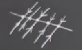
Çok yaygın olmasa da ortaya çıkabiliyor. Üstteki duruma "$\underline{0}$'da izole olmayan sabit nokta durumu" ismi verilir, çünkü orijinin yakınında diğer sabit noktalar var.
Bir durum daha var, onların üzerinde çok durmayacağım çünkü pratikte karşımıza çok çıkmıyorlar. $\tau^2 - 4\Delta = 0$ durumu bu, onun için kitabıma [1] danışabilirsiniz. Burada tekrarlanan kökler var, ve dejenere düğümler ortaya çıkabiliyor. Her yön bir özyön oluyor, ve mesela tüm gidiş yolları düz bir şekilde tek bir sabit noktaya akıyorlar, bir yıldız şekli oluşturuyorlar. Ya da tek bir özyön var, mesela
$$ \left[\begin{array}{rr} \lambda & 1 \\ 0 & \lambda \end{array}\right] $$
matrisinin özvektör / değerleri bunu verir. Kontrol edebilirsiniz, üstteki matrisin iki değil sadece bir tane özyönü var. Alttaki resimde üst sağda yıldız, alt sağda tek özyön durumu gösteriliyor. Mekanik bağlamında bu durum kritik sönümlüdür (critically damped).
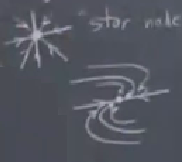
Büyük bitiş anına geldik. İşlediğimiz tüm farklı durumları akılda tutmak biraz zor, alttaki diyagram belki yardımcı olabilir. Eksenler $\tau,\Delta$. Bu eksenler üzerinden $\tau^2 - 4\Delta = 0$'i çizeriz, bu bir yana yatık paraboldur, ve aynı zamanda farklı durumları birbirinden ayıran bir sınır çizgisidir.
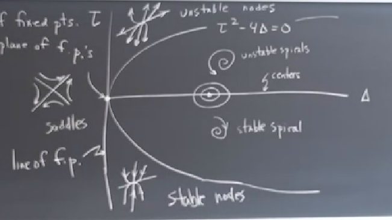
Orijinde düzlem sabit noktaları (plane of fixed points) var, $\tau$ ekseninin tamamı çizgi üzerinde sabit noktalar (line of fixed points).
Örnek 5.1.2 [2]
Lineer sistem $\dot{x} = Ax$'i çözün ki $A = \left[\begin{array}{rr}a&0\\0&-1\end{array}\right]$. Faz portrelerini $a$, $-\infty$ ile $\infty$ arasında giderkenki halini çizin.
Çözüm
$$ \left[\begin{array}{r} \dot{x} \\ \dot{y} \end{array}\right] = \left[\begin{array}{rr} a & 0 \\ 0 & -1 \end{array}\right] \left[\begin{array}{r} x \\ y \end{array}\right] $$
Matris çarpımı
$$ \dot{x} = ax$$
$$ \dot{y} = -y$$
sonucunu veriyor. Demek ki bu iki denklem bağlantısız (uncoupled), $x$ denkleminde $y$ yök, ve tersi de doğru. O zaman bu sistem ayrı ayrı çözülebilir,
$$ x(t) = x_0 e^{at}$$
$$ y(t) = y_o e^{-t}$$
Farklı $a$'lar için faz portreleri alttadır,
import numpy as np
import matplotlib.pyplot as plt
x,y = np.linspace(-10,10,100),np.linspace(-10,10,100)
X,Y = np.meshgrid(x,y)
def plot_g(a, fout):
#a = -.5
U = a*X
V = -Y
speed = np.sqrt(U*U + V*V)
start = [[2,.75]]
fig0, ax0 = plt.subplots()
strm = ax0.streamplot(x,y, U, V, color=(.75,.90,.93), linewidth=.5)
strmS = ax0.streamplot(x,y, U, V, start_points=start, color="crimson", linewidth=1)
ax0.set_xlabel(r'$ \dot{x} $',size=14)
ax0.set_ylabel(r'$ \dot{v} $',size=14 )
ax0.text(-5,5,'a = {0}'.format(a))
plt.savefig(fout)
plot_g(-2.0, '05_22.png')
plot_g(-1.0, '05_23.png')
plot_g(-0.5, '05_24.png')
plot_g(0.0, '05_25.png')
plot_g(1.0, '05_26.png')
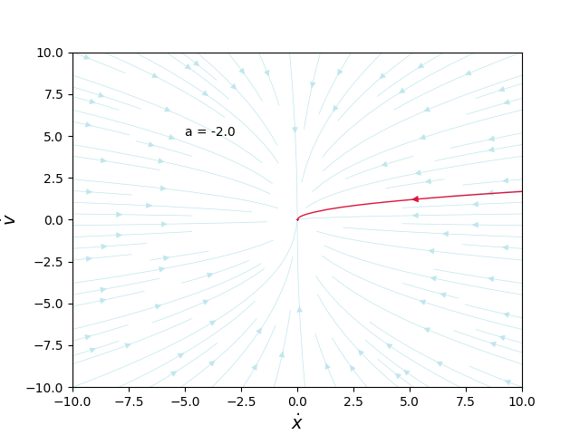 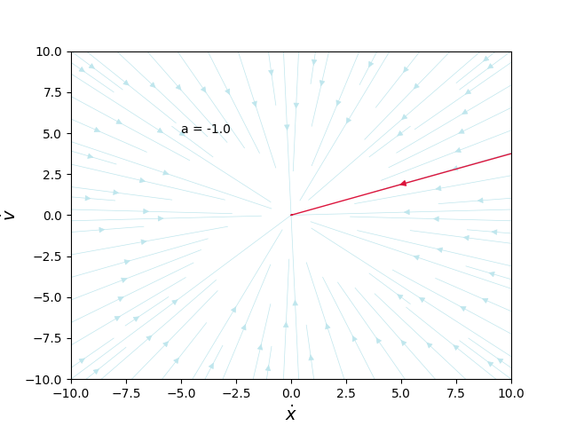
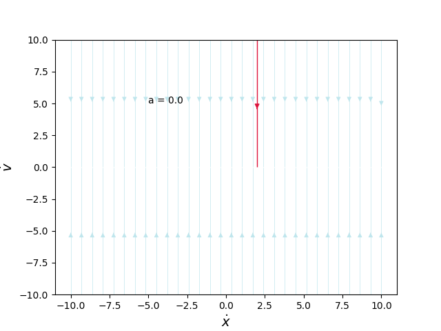
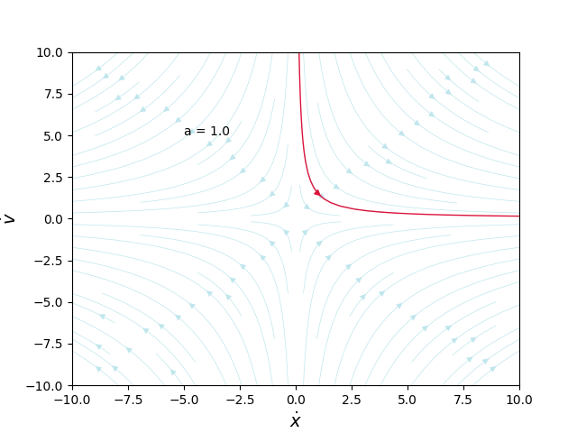
Örnek 5.2.1 [2]
$\dot{x} = x + y$, $\dot{y} = 4x-2y$ problemini çözün, başlangıç şartları $(x_0,y_0) = (2,-3)$.
import numpy as np
import matplotlib.pyplot as plt
a=1;b=1;c=4;d=-2;s1=2;s2=-3
x,y = np.linspace(-10,10,100),np.linspace(-10,10,100)
X,Y = np.meshgrid(x,y)
A = np.array([[a,b],[c,d]])
U = A[0,0]*X +A[0,1]*Y
V = A[1,0]*X + A[1,1]*Y
w,v = np.linalg.eig(A)
v = np.round(v,2)
w = np.round(w,2)
eigvects = np.dot(A,v)
speed = np.sqrt(U*U + V*V)
start = [[s1,s2]]
fig0, ax0 = plt.subplots(1,1,figsize=(8,8))
ax0.set_aspect('equal')
strm = ax0.streamplot(x,y, U, V, color=(.75,.90,.93), linewidth=.5)
strmS = ax0.streamplot(x,y, U, V, start_points=start, color="crimson", linewidth=1)
ax0.plot(start[0][0],start[0][1],'go')
ax0.set_xlim(-10,10)
ax0.set_ylim(-10,10)
ax0.plot(x,eigvects[1,0]/eigvects[0,0]*x,'b',alpha=.7)
ax0.plot(x,eigvects[1,1]/eigvects[0,1]*x,'b',alpha=.7)
ax0.set_xlabel(r'$ \dot{x} $',size=14)
ax0.set_ylabel(r'$ \dot{y} $',size=14 )
ax0.text(-9,8,r'$\dot{0}$ = {1}x + {2}y'.format('x',A[0,0],A[0,1]))
ax0.text(-9,7,'$\dot{0}$ = {1}x +{2} y'.format('y',A[1,0],A[1,1]))
ax0.text(-9,6,r'$(x_0,y_0)$ = ({0}, {1})'.format(start[0][0],start[0][1]))
ax0.text(-9,5,'$\lambda$ = {0}, {1} '.format(w[0],w[1]))
ax0.text(-9,4,'Eigenvectors = {0}, {1}'.format(v[0].T,v[1].T))
ax0.text(-9,-9,'General solution = c_1{0}e^({1}t) + c_2{2}e^({3}t)$'.format(v[0],w[0],v[1],w[1]))
plt.grid()
plt.savefig('05_27.png')
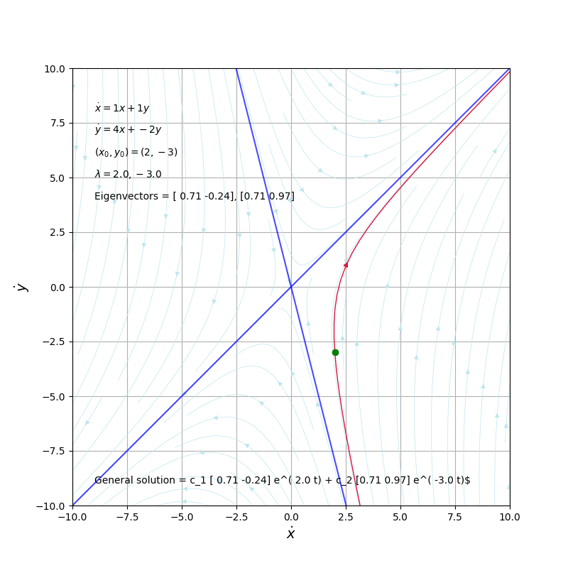
Kaynaklar
[1] Strogatz, Nonlinear Dynamics and Chaos